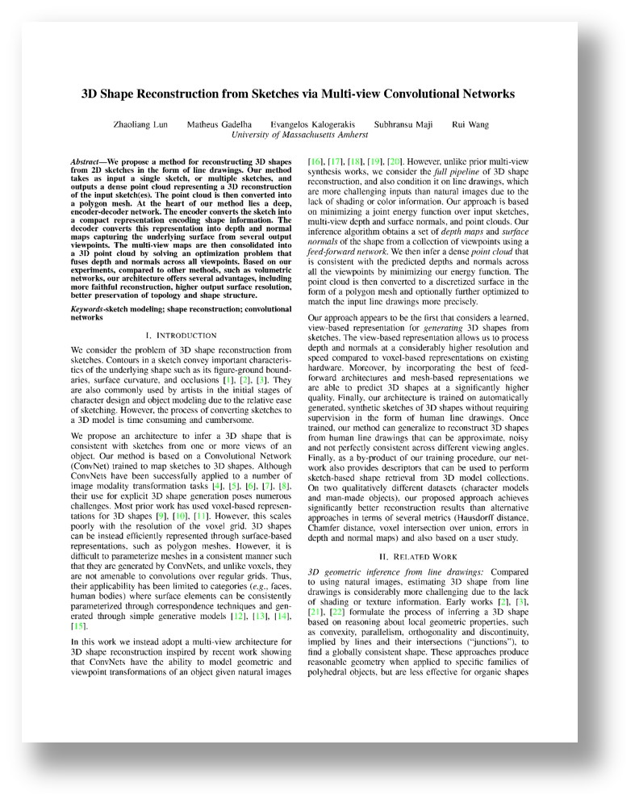

3D Shape Reconstruction from Sketches via Multi-view Convolutional Networks
Zhaoliang Lun, Matheus Gadelha, Evangelos Kalogerakis, Subhransu Maji, Rui Wang
Proceedings of the International Conference on 3D Vision (3DV) 2017
Preprint: [PDF]
Abstract
We propose a method for reconstructing 3D shapes from 2D sketches in the form of line drawings. Our method takes as input a single sketch, or multiple sketches, and outputs a dense point cloud representing a 3D reconstruction of the input sketch(es). The point cloud is then converted into a polygon mesh. At the heart of our method lies a deep, encoder-decoder network. The encoder converts the sketch into a compact representation encoding shape information. The decoder converts this representation into depth and normal maps capturing the underlying surface from several output viewpoints. The multi-view maps are then consolidated into a 3D point cloud by solving an optimization problem that fuses depth and normals across all viewpoints. Based on our experiments, compared to other methods, such as volumetric networks, our architecture offers several advantages, including more faithful reconstruction, higher output surface resolution, better preservation of topology and shape structure.
Paper
|  |
►SketchModeling.pdf, 18 MB
Zhaoliang Lun, Matheus Gadelha, Evangelos Kalogerakis, Subhransu Maji, Rui Wang |
Supplementary Material
The following archive is the supplementary material for our paper. Please refer to our paper for more details.
►Supplementary.zip, 30 MB
Code
The following archive contains source code for our algorithm. Please read the readme file within the archive for more details.
►Code.7z, 4 MB
Data
The following archives contain data for training / testing our algorithm. Please read the readme file in the codes for instructions on how to use them.
►TestingData.7z, 7 MB
►TrainingData.7z, 14 GB
►Checkpoint.7z, 12 GB
(Error in downloading the gigantic files?)Presentation
The following files contain the slides presented in 3DV 2017 at Qingdao, China.
►Presentation.pptx, 5.7 MB
►Presentation.pdf, 3.8 MB
Copyright
All 3D shape models used in this project are downloaded from the Internet and the original authors hold the copyright of the models. The code and data are provided for the convenience of academic research only.
Acknowledgments
We acknowledge support from NSF (CHS-1422441, CHS-1617333, IIS-1617917, IIS-1423082), Adobe, NVidia, and Facebook. Our experiments were performed in the UMass GPU cluster obtained under a grant from the Collaborative R&D Fund managed by the Massachusetts Technology Collaborative.